Snow reports · Where to ski
Daily snow reports for skiers: where the snow is, what is coming and where to ski, from the SnowScope snow map and measuring stations. Every number comes from that day's data.


Rain threatens upper slopes at Saddleback Mountain where 20 cm sits at 1,218 m. Freezing level rises to 3,760 m today, 22 November.
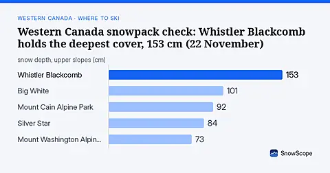
Whistler Blackcomb leads Western Canada with 153 cm on upper slopes. Snow covers 398,620 km² across 52 of 57 resorts on 22 November.

Cauterets Cirque du Lys leads the Pyrenees with 24 cm at the top on 22 November. Heavy snow forecast for 25 November will push coverage from 44 to 51 resorts.

La Grave has 171 cm on upper slopes today, which is 68% of normal for late November. The Alps saw sharp gains this weekend.


Today's snow in the US Northeast, read, means thin early-season snow, icy mornings and soft afternoons and warm air that …

Telluride holds 50 in (127 cm) on upper slopes as of 21 November. Brian Head Resort leads the US West with 54 in (138 cm).

Kirkwood leads the US West with 109 cm on upper slopes as of 21 November. Early-season snow depth guide for skiers.

150 cm on the upper slopes: that is why Whistler Blackcomb heads our list. Snow on the ground, snow from the last 72 hours, snow still to come: …

No snow on Atlas pistes on 21 November. High summits hold 1 cm at most. All three resorts are bare; the next storm may take weeks.

Rain above 2980m today at Gavarnie-Gèdre, but more snow arrives in four days. What to wear and bring for changing Pyrenees conditions.

Alps snow report, 21 November: Alpe d'Huez has 92 cm on upper slopes. Orelle leads the region with 136 cm. Fresh snow incoming by Tuesday.

Les Arcs leads with 166 cm on upper slopes. Snow falls through Sunday. Best runs are high and north-facing. Data from 20 November.

Early-season snow in the Alps is running 38% above the 46-year average. La Plagne's mid-slopes hold 36 cm more than usual for this date, with heavy snow forecast through Sunday.

Fresh snow keeps falling at Tahoe resorts this weekend. Upper slopes at Palisades Tahoe Alpine Meadows hold 107 cm (42 in) today, 19 November.

Whistler Blackcomb has 136 cm on upper slopes this weekend, but snow thins fast below 1500 m. Plan runs by elevation. Data from 19 November.

Telluride leads the US West with 125 cm on upper slopes on 19 November. Snow spread across the region to 782,430 km².

Snow-covered area jumped from 560 to 1,710 km² between November 17 and 19. Piau-Engaly holds the deepest snow at 15 cm on upper slopes as of November 19.

Only 16 US Northeast resorts have skiable snow on 18 Nov. Thin cover and rain-crust risk mean careful gear choices. Forecasts for 19-21 Nov show no new snow.

Only 16 Northeast resorts hold snow on 18 November, with Tuckerman Ravine leading at 38 cm. No new snow forecast through Saturday.

Mount Washington Alpine Resort has 104 cm on upper slopes today. Whistler Blackcomb leads the region with 136 cm. Data from 18 November 2026.

Palisades Tahoe Alpine Meadows leads the US West with 30 in (75 cm) on upper slopes. Fresh snow and a strong forecast make it the weekend pick for 18 November.

Crested Butte has 38 in (97 cm) on upper slopes on 18 November. Telluride leads the region with 50 in (126 cm). Snow covers 281,920 sq mi across the US West.

Alps snow report 18 November: Orelle leads with 111 cm upper-slope snow. Weekend forecast brings 100+ cm new snow at top resorts.


La Grave leads the Alps with 97 cm on upper slopes. Snow coverage is shrinking as early winter builds unevenly across the region on 15 November.

The Atlas holds just 20 km² of snow on 15 November, all on high summits up to 4 cm deep. No snow at ski resorts; none forecast through 18 November.

Mount Washington Alpine Resort leads with 158 cm at the top on 15 November. Fresh snow at Whistler Blackcomb and Mount Cain Alpine Park also scores high for November skiing.

At Big White on 15 November, the upper slopes hold 68 cm near the summit while the base remains bare; an extreme vertical gradient typical of early season.

Rain forecast as freezing level climbs to 4080 m; snow measured on 15 November is thin (under 20 cm) at all major Pyrenees resorts.

Tuckerman Ravine holds 24 cm on upper slopes. Early-season snow is thin; stay on groomed runs and check lifts before you go.

Alps snow report, 14 November. If you want the most snow in the Alps today, look at Saint-Luc (Switzerland): about 110 cm up high. After it come …

Fresh powder at three Pyrenees resorts, thin snow at all five, and warm days that risk crust. Here is what to pack and wear on 14 November.

Telluride has 39 inches today. Peak snow weeks historically arrive in late December and March, not November.

What to wear, what to pack and when to ski, resort by resort. Packing advice comes with …
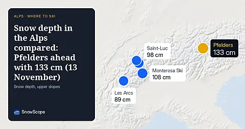
The snow-covered area has grown from 39,090 km² on 11 November to 76,100 km² today, and our forecast gives 57,910 km² on 16 November: more ground is …

Snow retreats to the highest summits in the Atlas. The three ski resorts have no snow today; 40 km² of peaks stay white. More melt ahead.
This weekend in the Alps: La Grave leads with 78 cm, Pfelders 133 cm upper slopes, Les Deux Alpes 52 cm. Fresh snow arriving Saturday and Sunday. Data from 13 November.

Telluride's mid-slopes show 9 in (24 cm), running 92 percent of the seasonal average for mid-November. Saturday's system adds 5 in (13 cm) mostly above 10,000 ft.

Whistler Blackcomb holds 116 cm on the upper slopes as of 12 November, with 83 cm forecast over the next three days. Mount Washington Alpine Resort leads the region at 162 cm.
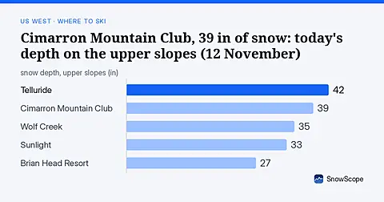
Cimarron Mountain Club, 39 in of snow: today's depth on the upper slopes (12 November). 42 in (106 cm): that is the snow on the upper slopes of …

Atlas snow report, 12 November. Atlas ski resorts today: no snow on the slopes. Snow only on the top summits: about 40 km² of white ground, 10 cm at …

At 1,308 m on Dent de Vaulion, today's 0 cm is more than this date brought in 34 of the past 46 winters (usual: 0 cm): a good amount of water is …

Dent de Vaulion's upper slopes face rain as freezing level reaches 2800 m Thursday; higher resorts get fresh snow for the weekend.

Only the highest peaks hold snow in the Atlas today: 20 km² white, 6 cm deep. The ski slopes are bare. Data from 11 November.

Thin snow under 10 cm across the Pyrenees on 11 November. Pack sharp edges, waterproof shell, helmet. Best snow on highest north-facing runs.

Where should you go skiing in the US West? Three inputs, one shortlist: today's snow depth, the new snow of the last 72 hours and the forecast point …

Manning Park Resort snow is at 23% of normal for mid-November. Here's what to bring for thin cover and the changing conditions ahead.
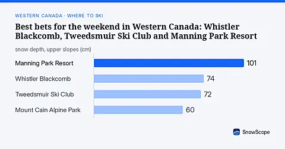
Three top Western Canada resorts for the weekend: Manning Park Resort leads with 101 cm, plus fresh snow forecast. Data from 11 November.

Wolf Creek leads with mid-slope snow at 361% of normal for November 10, well ahead of typical and signaling significant water storage in the mountains.
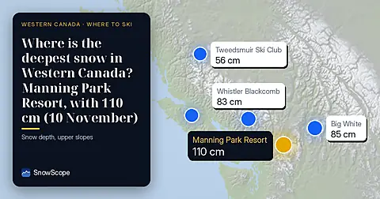
Where is the deepest snow in Western Canada today? Deepest snow in Western Canada today: Manning Park Resort, about 110 cm on the upper slopes …

Only 8 cm of snow sits on the highest Atlas peaks today. No snow at any ski resort. Cover is shrinking fast through mid-November.

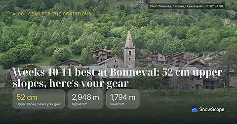
Bonneval-sur-Arc shows 52 cm upper slopes on 8 November. Weeks 10-11 are peak snow months. See what to pack for the forecast.

Mount Washington holds 145 cm on 8 November, the deepest in Western Canada, but the freezing level will climb above the summit by 11 November.
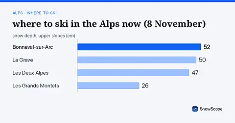
50 cm on the upper slopes: that is why La Grave heads our list. We combined today's snow depth, the new snow of the last 72 hours and the forecast to …

Telluride holds 115 cm (45 in) on 8 November. The freezing level climbs to 4,280 m (14,042 ft) on 9 November, bringing rain-on-snow risk to the highest slopes.

Kendall Mountain has the deepest snow in the US West at 50 in (127 cm) upper slopes. Snow covers 74,363 sq mi across the region on 7 November.

The Atlas ski resorts have no snow today. Only 80 km² of white ground remains on the highest peaks, with the deepest at 9 cm. Data from 7 November.

Estació d'esquí Port del Comte (Spain) has the deepest snow in the Pyrenees today, with about 29 cm on its upper slopes. Aramón Cerler follows with …
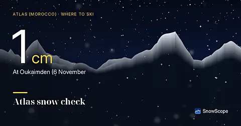
Oukaimden (Morocco) has the deepest snow in the Atlas (Morocco) today, with about 1 cm on its upper slopes. Habri follows with 0 cm, then Michlifen …

Bonneval-sur-Arc leads with 52 cm on upper slopes. Weekend forecast is quiet but choose high, north-facing terrain for the best early-season snow on 6 November.

Bonneval-sur-Arc (France) has the deepest snow in the Alps today, with about 52 cm on its upper slopes. La Grave follows with 52 cm, then Orelle with …

Freezing level reaches 3620 m on Sunday 8 November, above Aramón Cerler's 2618 m top, bringing rain-on-snow risk (forecast from 6 November data).

The Atlas has snow only above 3,000 m today: 60 km² on the highest ground, with 11 cm at most. No snow at the three ski resorts.

Artesina holds the deepest snow in the Alps this weekend with 22 cm upper slopes. Week 10 sees the best conditions historically. Data from 5 November.

Three Pyrenees resorts have snow for the weekend of 7 November. Rasos de Peguera, Aramón Cerler and Masella each hold 17–20 cm on upper slopes after 72 hours of fresh snow.

Kendall Mountain holds 51 in (130 cm) on upper slopes. 145 of 195 US West resorts have snow on 5 November.

Kendall Mountain now has 51 inches on upper slopes as of November 5, 2026. Snow peaks in late December and March—the best historical windows to visit.

The most snow in Western Canada is at Silver Star: about 112 cm on the upper slopes. Next come Big White with 90 cm and …
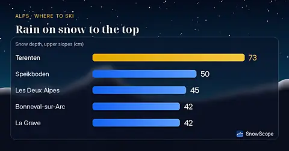
Terenten has 73 cm on upper slopes as of 4 November; freezing level will reach 2970 m on 5 November, bringing rain to the summit at 1381 m.
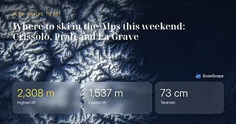
We combined today's snow depth, the new snow of the last 72 hours and the forecast to pick Crissolo, Prali and La Grave. Of these resorts, Terenten …

We combined today's snow depth, the new snow of the last 72 hours and the forecast to pick Masella, Cauterets Cirque du Lys and Aramón Cerler. Of …

Kendall Mountain has 48 in (122 cm) on upper slopes. Telluride ranks second with 46 in (118 cm). SnowScope map shows 224,030 km² of snow cover on 4 November.

Whistler Blackcomb forecast to gain 47 centimetres by Saturday as snow arrives Thursday through the region, according to our model run on 4 November.

Alpine snow depths are running behind normal for early November, with only 55 cm at the best resorts as of November 3rd.
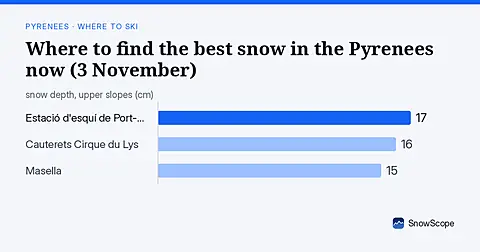
Masella, Port-Ainé and Cauterets have the most skiable snow in the Pyrenees on 3 November. Upper slopes hold 15–17 cm.
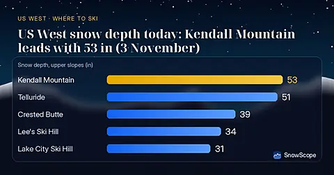
The most snow in the US West is at Kendall Mountain: about 53 in (134 cm) on the upper slopes. Next come Telluride with …
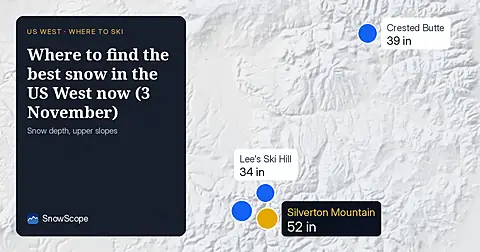
We combined today's snow depth, the new snow of the last 72 hours and the forecast to pick Silverton Mountain, Telluride and Lee's Ski Hill. Of these …

The most snow in Western Canada is at Big White: about 91 cm on the upper slopes. Next come Silver Star with 84 cm and …

Snow on 3 November 2026: Kendall Mountain 53 in (134 cm) after a storm, Big White 91 cm, the Alps up to 55 cm at Bonneval-sur-Arc.